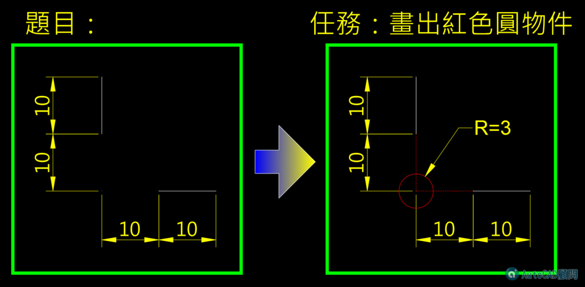

請問你會使用什麼方法，完成圖片中的紅色圓物件呢!!方法有很多種，建議你可以先想想看喔~
請先回帖說明自己會使用的方式，然後再來看我所提供的方法，這考驗你對AutoCAD的了解程度，藉此機會可以明白有很多路徑(方法)可以到達目的地，希望成員們多多提供與討論~
一、使用輔助線
二、物件鎖點_INT(延伸交點)
三、物件鎖點追蹤:(F3及F11須打開)
須使用 極座標模式(F10)，不能使用 正交模式(F8) ，另外請關閉 動態輸入(F12) 喔!!
四、點篩選(.X)
相關教學文章:
https://www.autocad-tw.com/t2109-topic
五、TK追蹤
*看完影片請回覆，告訴大家影片中哪幾個方法你已經會使用喔*
延伸閱讀：[練習]繪圖小技巧2